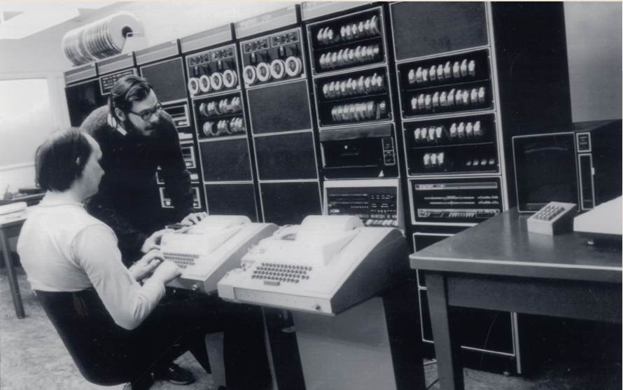
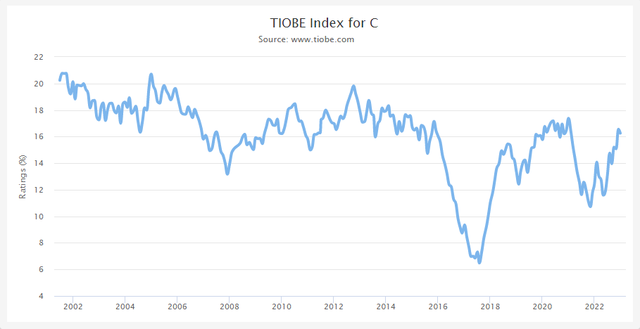
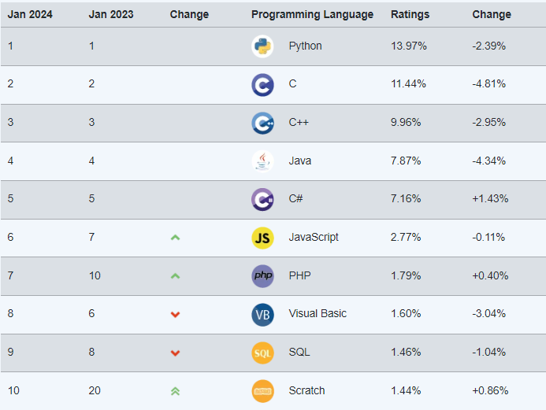
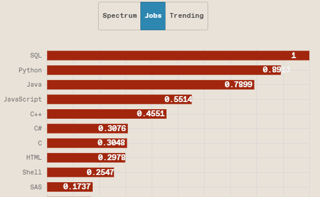
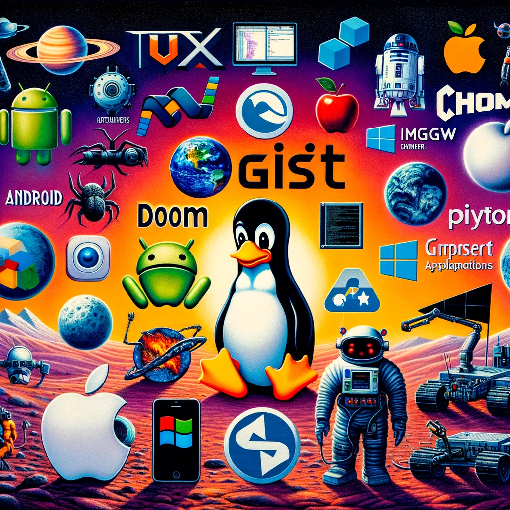
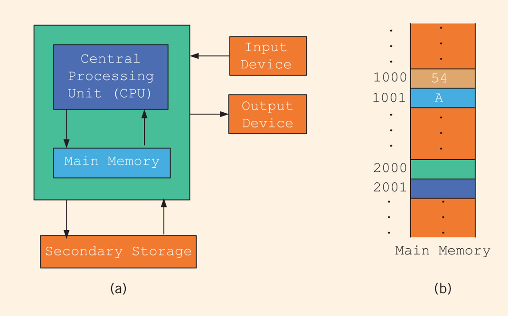
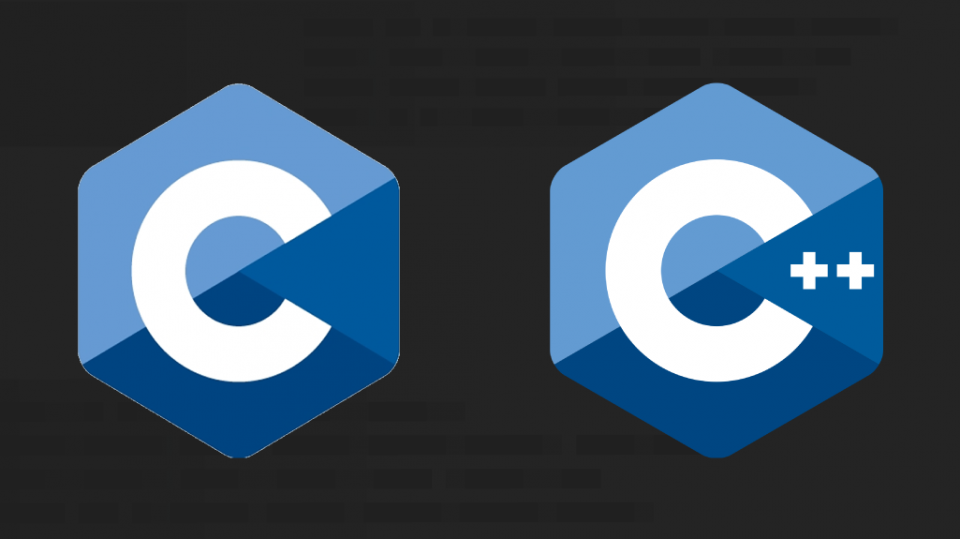
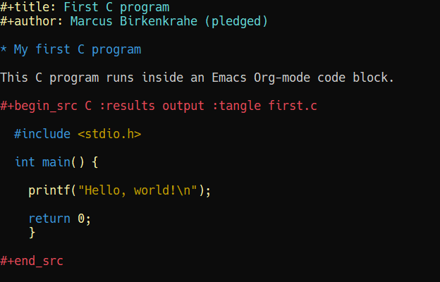
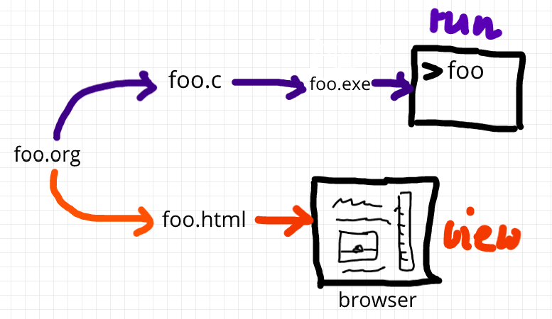

Introduction to C and C++
CSC100 Introduction to programming in C/C++ Spring 2024
Table of Contents
- 1. What will you learn?
- 2. What is C?
- 3. How popular is C?
- 4. How important is C?
- 5. What is a programming language?
- 6. Where does C come from?
- 7. Standardization
- 8. How computers work (hardware)
- 9. How programs are created and processed (software)
- 10. Strengths and weaknesses of C
- 11. What is the difference between C and C++?
- 12. Why are we not just learning C++?
- 13. Practice: 'Hello world' program in C++
- 14. Practice: first "literate" C program!
- 15. What did you just learn?
- 16. Summary
- 17. Glossary
- 18. References
1. What will you learn?
- What is C?
- What is its origin?
- What is its importance?
- What's the difference to C++?
- Why are we not just learning C++?
- What are C's strengths and weaknesses?
- First 'literate' C program and Emacs + Org-mode
Source:
- Textbook King (2008) ch.11
- See also slides (GDrive)
2. What is C?
- C is a programming language created in the early 1970s.
- It grew out of the development of the UNIX operating system
- In turn, UNIX grew out of a space travel game (Brock, 2019).

Figure 1: Thompson & Ritchie & DEC PDP-11, 1970. (Brock, 2019)
3. How popular is C?
- C consistently ranks among the top 3 programming languages.
- TIOBE Language of the year 2008, 2017, 2019
- Highest position since 2001: #1 in Sep 2021
- Lowest position since 2001: #2 in Jan 2024

Figure 2: TIOBE Index for C, 2002-2023 (Source: TIOBE)
- Popularity contest: cp. TIOBE Index2
_
- Of the top 10 languages, only SQL (databases), and Assembly (machine) language are not C-type languages!

Figure 3: IEEE index - by (Source: Cass, 2023)
"Python alone does not make a career. In our “Jobs” ranking, it is SQL that shines at No. 1. Ironically though, you’re very unlikely to get a job as a pure SQL programmer. Instead, employers love, love, love, seeing SQL skills in tandem with some other language such as Java or C++." (Cass, 2023)
4. How important is C?

Figure 4: Real world applications of C (Source: DataFlair)
Some well-known programs written in C:
- The Linux kernel (and therefore, Android - 40%)
- UNIX operating system (core of MacOS and iOS - 25%)
- Windows operating system (core of most PCs - 30%)
- Doom (early video game) and Wolfenstein 3D
- Git version control system
- C compilers (Clang, GCC/MinGW)
- Interpreted languages like Python
- Any software that crosses platforms easily (portable)
- Software for the Curiosity Mars rover and most space apps
See also:
"Why C programming is awesome" (Hawkes, 2016).
Video summary:
- Basis of most modern programming languages like Java, C#, C++, Python etc.
- Use in high performance embedded systems like the Curiosity Rover on Mars.
- Language for kernel development (manager for the operating system).
- Writing code in C requires you managing your own memory.
- In the process you find out how a computer really works.
- C is in high demand for jobs
- C is portable (runs everywhere) and efficient (runs fast)
5. What is a programming language?
"A programming language is a formal language comprising of a set of strings that produce various kinds of machine code output. Programming languages are one kind of computer language, and are used in computer programming to implement algorithms." (Source: Wikipedia)
- Formal language?
- Set of strings?
- Machine code?
- Algorithm?
Fortunately, computer (and data) science isn't really a science at all!
(It's more of a craft like mining, knitting, or pottering.)

Figure 5: [Scientific] fields arranged by "purity" (xkcd)
In the xkcd cartoon, computer (and data) science do not even figure, because they're so interdisciplinary (the opposite of "pure"). Still, there is a lot of "pure" mathematics, physics and even biology that plays a role in computer science (and programming).
6. Where does C come from?

Figure 6: "K&R" (Kernighan/Ritchie, 1978)
- By-product of the UNIX operating system 1969 3
- Developed on DEC PDP-7 (computer with 8K words of main memory4)
- Written originally in assembly language
- UNIX rewritten in C by 1973 for DEC PDP-11
- Standardization of C, 1973-2018
See also "C Programming Language (Brian Kernighan)" (Lex Fridman, 2020)
- Why did C survive, and why did it have such a long-lasting impact?
- Expressiveness (natural to use), efficiency (fast, small), environment (Unix)
- What did it take to write the definitive book on C? (Popular and standardizing)
- In 1977 there were many Unix systems and no authoritative document
- Book included a crystal-clear reference manual
- Find examples that might hang together
- What do you find powerful about examples?
- It'll tell you how to do something
- It'll help you do something similar but perhaps more ambitious
- Many examples were picked for Unix' text processing problems: "read input, write output"
- Find things that are representative of what people want to do (in core form)
7. Standardization

Figure 7: How standards proliferate (Source: xkcd)
Details: see ANSI (American National Standards Institute)
Sometimes, standardization goes awry. For example, Python 3 was not "backwards compatible" with Python 2.7, R seems split in a "Tidyverse" and a "base R" community.
8. How computers work (hardware)

Figure 8: Computer architecture (simplified)
(a) CPU + RAM + Non-Volatile Memory (NVM)
- Central Processing Unit: very, very fast. General purpose (like Intel Core, AMD Ryzen or Apple M-series); embedded CPUs (on microcontrollers); server CPUs (Intel XEON, AMD's EPYC).
- GPUs are workhorses for parallel computing that usually run alongside a CPU (e.g. for fast scientific or graphics calculations). An example for AI is Google's TPU (Tensor Processing Unit) designed specifically for neural network machine learning.
- Secondary storage (non-volatile memory, NVM): very, very slow. Much too slow for the CPU. NVM can be a hard disk, or a Solid State Drive (SSD) - it doesn't disappear when the power goes off (by way of permanent magnetic fields).
b) Main memory (Random Access Memory): fast enough for the CPU. Organized as a "stack" of memory addresses. All programs must be loaded into memory before they can be executed. In C, you can access memory cells directly through the "pointer" data structure.
9. How programs are created and processed (software)
9.1. Simplified process
- WRITE source code in an editor (NVM = harddisk)
- COMPILE source code to machine code (RAM = memory)
- RUN program (CPU = Central Processing Unit)
- DISPLAY results (RAM = Memory)
- SAVE result (NVM = harddisk)
9.2. Complete process
Specifically for C and our compiler GCC, this process looks technically like this:

Figure 9: GCC compilation process (Source: Hock-Chuan, 2018).
10. Strengths and weaknesses of C
| STRENGTH | WEAKNESS |
|---|---|
| Efficiency | Permissiveness (Error-prone) |
| Portability | Terseness and Understanding |
| Power | Large program maintenance |
| Flexibility | |
| Standard library | |
| Integration with UNIX |
- Efficiency: do a lot with little effort (small programs)
- Portability: it works everywhere, on anything
- "Power": you can do brain surgery with a pencil
- Flexbility: you can do the same thing in many different ways
- "Standard library": pre-defined functions/tasks; "stdio.h", a standard library for "I/O" (Input/output)
- Integration with UNIX (because UNIX is the motherlobe)
11. What is the difference between C and C++?
C++ is a superset of C.

Figure 10: C/C++ logos
| WHAT | C | C++ |
|---|---|---|
| TIME | Thompson/Ritchie 1970s | Stroustrup 1980s |
| TYPE | Imperative procedural | Object-oriented |
| GOOD | System programming | Games and graphics |
| USED | Internet of Things | Flight Software |
Source: Lemonaki, 2021.
12. Why are we not just learning C++?
- Object-orientation is a difficult paradigm (C++).
- System programming is pure power (C).
- C is simpler, smaller, and faster.
- C has 35 keywords, C++ has 95.
13. Practice: 'Hello world' program in C++
To round this section off, let's repeat our last practice exercise
with C++ instead of C, using notepad and the g++ compiler:
Implement the following program (replace "your name" by your name:
// Hello world program in C++ // By [your name] (pledged) #include <iostream> /* print hello world message a first C++ program */ int main() { std::cout << "Hello, world!" << std::endl; return 0; }
- Save the program with the file extention
.cpp - Run the program on the command line using the
g++compiler and the-oflag to rename the executable file tohello++. - Upload your file directly to Canvas.
What's different about this code compared to hello.c?
13.0.1. Solution:
Process:
- Open the Windows command line
- Enter
notepad hello.cpp - Enter the program text as shown
- Save the program in the editor
- On the command line, enter
g++ hello.cpp -o hello++ - On the command line, enter
hello++(may not work for g++ 13.2) - Open Canvas and upload the C++ file.
14. Practice: first "literate" C program!
Figure 11: Books aren't the only way to be "literate" in programming!
Here is a PDF of this exercise and a YouTube video (30 min).
Let's set Emacs up, write and run a first "literate" C program! it is very important that you enter everything exactly as shown. if you get something wrong just go back one step. Contact me if you need me after checking with your neighbor if he or she can help.
- Open the command line terminal with
cmdin the search field - At the prompt, type:
gcc --version - At the prompt, type:
emacs --version - If Emacs is available, enter:
emacs -q - Enter:
ALT + x ewwto open a browser inside Emacs. - At the prompt, enter:
tinyurl.com/EmacsLyon - Save the downloaded file with
CTRL + x CTRL + was~/.emacs - Kill the current
*EWW*buffer withC-x k - Shut Emacs down with
C-x C-w. - Restart Emacs. The file you just created,
.emacs, is now loaded. - Create a new file:
C-x C-f- at the prompt, enterfirstLit.org. Enter the following text (replace
yournamewith your own name):
- 'Run' the program by putting the cursor anywhere on the code block
and typing
CTRL-c CTRL-c. You should see the result on the screen. - This is your first C program! Save the file with
CTRL + x CTRL + s(in the minibuffer, you will seeC-x C-s). - 'Tangle' the code with
CTRL + c CTRL + v t(or, alternatively, withALT + x org-babel-tangle RET): Emacs reports"Tangled 1 code block from first.org"in the minibuffer. 'Weave' the document from the literate file with
C-c C-efollowed byhoto open the document as HTML in a browser.
Figure 12: What happens when you tangle or weave a literate program
- Open a shell inside Emacs by entering:
ALT-x eshell - At the
$prompt, enterls -l first*- you should seefirst.clisted - Display
first.cby enteringcat first.c - Enter
gcc first.c -o helloto compile the C program into an executable - Enter
helloto run the executable. You should see the output. - Exit and close Emacs with
CTRL-x CTRL-c - Exit and close the shell by entering
exitafter the prompt Save your file to a directory on your GDrive (you can do this from GDrive in a browser, with File Explorer, or directly in Emacs with the following commands (you don't have to worry about spaces etc. because you can auto-complete using the <TAB> key):
C-x C-w ;; write file w:/My Drive/ ;; target directory C-x d w:/My Drive/ ;; open target directory s ;; sort to see recent files at top
You can also do it in the Emacs eshell that you used earlier to compile and run the file on the shell (auto-complete with <TAB>):
cp first.org w:/My\ Drive/ # copy file to target directory cat w:/My\ Drive/first.org # view copy of file at target location
- Upload
first.orgas your first 'literate' in-class assignment:- Open a browser to GDrive and upload the file
- Open the assignment in Canvas at lyon.instructure.com
- Upload the file from GDrive (click on "
More") - When you see it attached, click on
Submit Assignment.
15. What did you just learn?
You learnt:
- How to open and close the GNU Emacs editor.
- How to create, save, and write an Emacs Org-mode file.
- How to create, compile, and run a C program inside Emacs.
- How to tangle a literate program into source code.
- How to save a file on your GDrive in three ways.
- How to submit a completed assignment to Canvas.
It would be worth repeating these steps on your own without peeking in your notes to make sure that you understood what you did and that you can do it again - we'll do this hundreds of times in class!
You can watch me complete this exercise in this video (30').
16. Summary
- The C programming language was created 50 years ago
- C is small, simple, very fast, and close to the computer
- Linux (and Android) are largely written in C
- The object-oriented programming (OOP) language C++ contains C
- System programming is a powerful skill set
17. Glossary
| CONCEPT/TOPIC | DEFINITION |
|---|---|
| DEC PDP-11 | 1970s mainframe computer |
| UNIX | Operating system (ca. 1969) |
| ANSI | American National Standard Institute |
| String | A data type representing text |
| Assembler | Machine code (hard to write/read) |
| Algorithm | Fixed process or set of rules |
| Linux | Operating system (ca. 1991) |
| C | Imperative, procedural programming language |
| compiler | Software to translate source into machine code |
| C++ | Object-oriented (OO) superset of C |
| Clang | C/C++ compiler |
| gcc | GNU compiler bundle (incl. C/C++) |
| Java,C# | OO programming language |
| Perl | Scripting language |
| Git | Software version control system |
| GitHub | Developer's platform (owned by Microsoft) |
| Library | Bundle of useful functions and routines |
| Portability | Ability of software to run on different hardwares |
| Efficiency | Software speed of execution and memory requirements |
| Permissiveness | Degree to which a language tolerates ambiguities |
| Object-orientation | Ability to define abstractions |
| System programming | Programming close to the machine |
| Application programming | Programming close to the user |
18. References
- Big Think (Jun 13, 2011). Bjarne Stroustrup: Why the Programming Language C Is Obsolete | Big Think [video]. URL:youtu.be/KlPC3O1DVcg.
- Brock (October 17, 2019). The Earliest Unix Code: An Anniversary Source Code Release [Blog]. URL: computerhistory.org.
- Cass (29 August 2023). The Top Programming Languages 2019 > Python remains the big kahuna, but specialist languages hold their own. IEEE Spectrum. URL: spectrum.ieee.org.
- Chatley R., Donaldson A., Mycroft A. (2019) The Next 7000 Programming Languages. In: Steffen B., Woeginger G. (eds) Computing and Software Science. Lecture Notes in Computer Science, vol 10000. Springer, Cham. https://doi.org/10.1007/978-3-319-91908-9_15
- Data Flair (n.d.). Applications of C Programming That Will Make You Fall In Love With C [Tutorial]. URL: data-flair.training.
- DESY (Oct 25, 1995). The C++ Virtual Library. URL: desy.de
- Gustedt (2019). Modern C. Manning.
- Hock-Chuan (2018). GCC and Make: Compiling, Linking and Building C/C++ Applications [website]. URL: ntu.edu.sg.
- Kernighan/Ritchie (1978). The C Programming Language. Prentice Hall. Online: wikipedia.org.
- King (2008). C Programming - A Modern Approach. Norton. Online:knking.com.
- Kirsh (September 13, 2021). Rust vs C++ and Is It Good for Enterprise? [blog]. URL: www.incredibuild.com.
- Lemonaki, Dionysia (November 4, 2021). C vs. C++ - What's The Difference [blog]. URL: freecodecamp.org.
- Neilsen (Aug 14, 2020). Quora. URL: qr.ae/pGzZ9z.
- Steinhart (2019). The Secret Life of Programs. NoStarch Press. URL:nostarch.com.
- TIOBE (Jan 2022). TIOBE Index for January 2022 [website]. URL:tiobe.com.
- Torvalds (6 Sep 2007). Linus Torvalds on C++ [blog]. URL:harmful.cat-v.org.
- xkcd(n.d.) Purity [cartoon]. URL: xkcd.com/.
Footnotes:
All sources are referenced at the end of the script, followed by the footnotes, which do unfortunately not render as links on GitHub. The book by King (2008) does not cover a few recent updates to the ANSI standard for C, like C11, and the current standard C17. The next major C standard revision (C23) is expected for 2023. Gustedt (2019) is a good (but quite difficult) book on "modern C".
Since 2000, C is one of the top two languages in the TIOBE index (based on searches), and one of the top three of the (more relevant) IEEE ranking.
The motivation to create Unix, according to Wikipedia, was to port Thompson's space travel video game to the PDP-7 mainframe computer. So in a way we owe modern computing to gaming.
How many bits can be stored in memory of 8K words depends on the bit length of a word (or byte). One byte holds 8 = 23 bits (binary digits, or memory locations capable of storing 2 states). For example, the binary "1111111" represents the decimal number 255 = 28 - 1. 8K byte correspond to 8 * 210 = 8 * 1,024 = 8,192 bits. By comparison, the main memory of my laptop has 16GB = 16 * 230 = 3.2E+31 bits. It follows from these memory restrictions that UNIX (and C) had to be designed to be very small, or space effective.